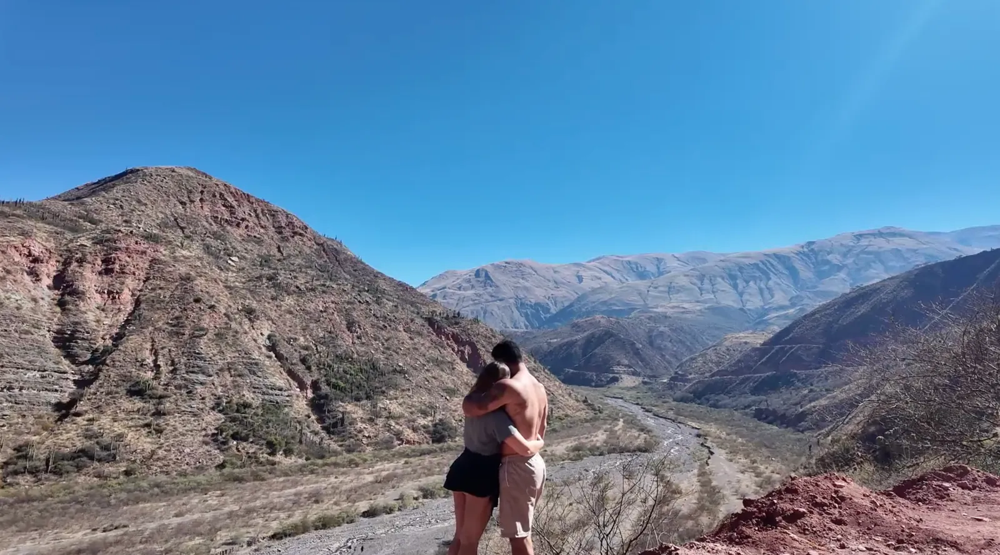

Seguro viagem para Argentina, Chile e Uruguai: é obrigatório e qual a cobertura mínima?
O que cada país exige, qual seguro a Argentina aceita, quanto de cobertura médica contratar, se o seguro do cartão vale e como usar o cupom ESTRADAEMDOIS.
Resposta curta
- Argentina
- Obrigatório. Sem valor mínimo em lei; precisa cobrir a viagem inteira, internação, atendimento ambulatorial e repatriação sanitária.
- Chile
- Não é obrigatório para brasileiros em turismo, mas é muito recomendado (altitude no Atacama).
- Uruguai
- Não é obrigatório desde o fim de 2023, mas turista paga o atendimento médico do próprio bolso.
- De carro
- Nos três países, a Carta Verde (seguro do carro) também é exigida. Ela não substitui o seguro viagem.
"Qual seguro a Argentina aceita?", "o seguro do cartão vale?", "qual a cobertura mínima?". São as perguntas que mais recebemos de quem vai viajar de carro pela América do Sul, e as regras mudaram desde 2025. Juntamos aqui o que vale na Argentina, no Chile e no Uruguai, com a nossa recomendação de cobertura para cada um.
Cobertura mínima por país
| País | É obrigatório? | Mínimo exigido | O que a gente contrataria |
|---|---|---|---|
| Argentina | Sim | Sem valor fixo em lei | A partir de USD 30 mil |
| Chile | Não (turismo) | — | A partir de USD 30 mil, com cobertura para altitude |
| Uruguai | Não (desde 2023) | — | A partir de USD 30 mil |
A coluna "o que a gente contrataria" é a nossa recomendação, não uma exigência legal.
Argentina: qual seguro é aceito e qual a cobertura mínima
Desde 2025, o DNU 366/2025 mudou a Lei de Migrações argentina (Lei 25.871): turistas estrangeiros que não são residentes permanentes precisam ter seguro de saúde. Vale também para brasileiros e para quem é do Mercosul. Não há exceção para quem entra só por um dia ou de carro.
Existe cobertura mínima em dólares?
Não. A regra não fixa um valor. O que ela exige é que o seguro cubra toda a estadia no país e inclua atendimento médico, internação, atendimento ambulatorial e repatriação sanitária. É exatamente isso que a declaração juramentada usada pelos consulados argentinos pede para o viajante confirmar.
Na prática, o mercado costuma indicar entre USD 15 mil e USD 30 mil. A gente prefere ficar com USD 30 mil ou mais: a diferença de preço é pequena, e uma internação longe de casa passa disso fácil.
Qual seguro a Argentina aceita?
Qualquer seguro viagem internacional ou plano de assistência que:
- esteja no seu nome (cada pessoa do carro precisa da sua apólice ou estar listada nela);
- cubra a Argentina em todas as datas da viagem, do primeiro ao último dia;
- inclua despesas médicas e hospitalares, internação e repatriação sanitária;
- tenha um comprovante que você consiga mostrar: apólice ou certificado, no celular e impresso.
Pedem na fronteira?
A regra vale para qualquer entrada, inclusive pela fronteira terrestre. Na prática, a fiscalização varia: tem quem relate que não pediram nada e tem quem precisou mostrar. Como sem seguro a entrada pode ser negada, a gente trata como item obrigatório do checklist, junto com os documentos para entrar na Argentina de carro.
O que acontece se precisar de hospital sem seguro
Desde 11 de agosto de 2026, com a Resolução 1066/2026 do Ministério da Saúde argentino, os hospitais administrados pelo governo nacional cobram atendimento de estrangeiros não residentes. Emergências continuam sendo atendidas, mas atendimento programado exige o pagamento antecipado do valor orçado.
Chile: não é obrigatório, mas no Atacama faz falta
Para turistas brasileiros que ficam até 90 dias, o Chile não exige seguro viagem na entrada. Mesmo assim, atendimento médico particular no Chile é caro, e o roteiro mais procurado, o Deserto do Atacama, passa por lugares acima de 4.000 m, como o Geysers del Tatio e o Paso de Jama.
Por isso, além do valor, olhe as condições:
- Altitude: confira se o plano não exclui mal de altitude, oxigenoterapia ou remoção por altitude. Muitos planos básicos excluem.
- Atividades: trilhas e subidas de vulcão, como a do Cerro Toco, podem exigir cobertura para esporte de aventura.
- Valor: a partir de USD 30 mil já atende bem um roteiro de carro.
Uruguai: deixou de ser obrigatório, mas a conta é sua
Desde o fim de 2023, o Uruguai pede só documento de identidade válido para turistas brasileiros, e o seguro viagem passou a ser apenas recomendado. O detalhe que pouca gente sabe: o sistema de saúde não cobre turistas, então qualquer atendimento, em hospital público ou particular, é pago por você.
- Valor: a partir de USD 30 mil cobre bem uma viagem por Montevidéu, Punta del Este e Colonia.
- De carro: a Carta Verde é exigida na aduana uruguaia. Leve também o CRLV e, se o carro não for seu, a autorização do dono.
- Pedágios: as estradas usam pedágio eletrônico. Antes de entrar, veja como funciona a TAG ou o passe para turistas.
- Na volta: registre a saída do carro na aduana uruguaia.
Mais de um país na mesma viagem de carro
Você não precisa de um seguro por país. Contrate um plano para a América do Sul que:
- cubra todos os países do roteiro;
- comece no dia em que você sai de casa e termine no dia em que volta, incluindo os dias de estrada no Brasil até a fronteira;
- tenha folga de um ou dois dias, porque passo de fronteira fecha por neve e o roteiro estica.
Foi assim no nosso roteiro da Argentina ao Atacama de carro.
O seguro do cartão de crédito vale?
Pode valer, se cumprir as mesmas condições. Antes de confiar nele, confira:
- Ativação: muitos só valem se a passagem ou parte da viagem for paga com o cartão. Numa viagem de carro, isso nem sempre acontece.
- Certificado: emita o certificado de viagem no site do cartão, no seu nome e com as datas e o destino.
- Coberturas: veja se inclui repatriação sanitária, odontologia e medicamentos, e qual é o limite de despesas médicas.
- Duração: alguns limitam a quantidade de dias por viagem.
- Quem está coberto: confira se cobre também quem viaja com você.
Se faltar qualquer um desses pontos, um seguro avulso resolve sem dor de cabeça.
Como escolher o seguro (checklist)
- Despesas médicas e hospitalares a partir de USD 30 mil
- Repatriação sanitária e traslado de corpo
- Odontologia e medicamentos de emergência
- Doenças preexistentes, se você tem alguma
- Altitude e esportes de aventura, para Atacama e Andes
- Atendimento 24h em português e por WhatsApp
- Todos os países e todas as datas da viagem, com um ou dois dias de folga
Onde a gente faz o nosso: Real Seguro Viagem
A gente usa a Real Seguro Viagem e tem parceria com ela. A Real é uma corretora e comparadora que funciona desde 2008: em vez de vender um plano só, ela mostra lado a lado opções de várias seguradoras, como Assist Card, Affinity, Coris, GTA, Hero, SulAmérica, Travel Care, Universal Assistance, Vital Card e Welcome Assist.
- Compara preço e cobertura de uma vez só, no mesmo lugar;
- parcela em até 12x sem juros no cartão, com desconto extra no Pix ou boleto;
- atendimento por WhatsApp e telefone, inclusive para ajudar se você precisar acionar o seguro.
Como usar o cupom ESTRADAEMDOIS
- Entre na Real pelo nosso link (botão abaixo).
- Coloque o destino e as datas da viagem e compare os planos.
- Escolha a cobertura de acordo com a tabela deste post.
- Use o cupom ESTRADAEMDOIS para ganhar desconto. Se tiver dúvida, fale com a equipe da Real pelo WhatsApp e diga que veio do Estrada em Dois.
- Salve a apólice no celular e imprima uma cópia antes de sair.
ESTRADAEMDOISLink de parceiro: se você contratar por ele, podemos ganhar uma comissão, sem custo extra para você.
Perguntas frequentes
Qual a cobertura mínima de seguro viagem para a Argentina?
A lei argentina não fixa um valor mínimo. O seguro precisa cobrir toda a estadia, com atendimento médico, internação, atendimento ambulatorial e repatriação sanitária. A gente recomenda a partir de USD 30 mil.
Qual seguro viagem a Argentina aceita?
Qualquer seguro viagem internacional ou plano de assistência no nome do viajante, válido na Argentina em todas as datas da viagem e com despesas médicas, internação e repatriação sanitária. Leve a apólice no celular e impressa.
Seguro viagem é obrigatório para entrar na Argentina de carro?
Sim. A exigência do DNU 366/2025 vale para qualquer forma de entrada, inclusive pela fronteira terrestre, também para brasileiros e cidadãos do Mercosul.
Seguro viagem é obrigatório no Chile?
Não para turistas brasileiros que ficam até 90 dias. Mesmo assim é recomendado, principalmente no Atacama, por causa da altitude e do custo do atendimento particular.
Seguro viagem é obrigatório no Uruguai?
Não. Desde o fim de 2023 o Uruguai pede só documento de identidade válido para turistas brasileiros. Mas o sistema de saúde não cobre turistas, então o atendimento é pago por você.
O seguro do cartão de crédito vale na Argentina?
Pode valer se estiver no seu nome, cobrir todas as datas e incluir despesas médicas, internação e repatriação sanitária. Emita o certificado de viagem e confira se ele exige que a viagem tenha sido paga com o cartão.
Preciso de um seguro para cada país?
Não. Um plano para a América do Sul que cubra todos os países e todas as datas do roteiro resolve.
Como usar o cupom ESTRADAEMDOIS na Real Seguro Viagem?
Entre na Real pelo link do Estrada em Dois, faça a cotação com destino e datas e use o cupom ESTRADAEMDOIS para ter desconto. A equipe da Real também ajuda pelo WhatsApp.
Andressa e Guilherme
Casal por trás do Estrada em Dois. Viajamos de carro pelo Brasil, Argentina e Chile e mostramos tudo no YouTube.